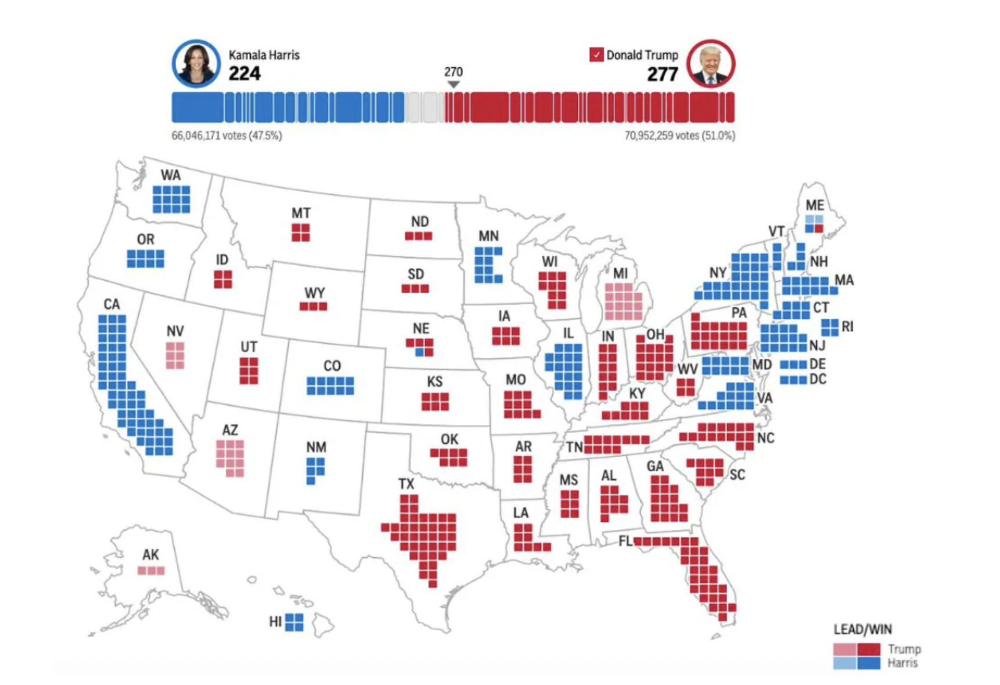

Popular votes (votes cast by citizens till Nov 5): Trump won 71,527,867 votes (51%) votes; rival Kamala Harris lost with 66,671,671 votes (48.0%).
Electoral votes indicate the distribution of votes in the Electoral College. The chart below show the distribution of electoral votes - Chart screenshot taken from the mockup.
Estimated voting trends for Harris and Trump over time before the election. The chart below is created using PLOTLY'S line chart
Results from key swing states: Pennsylvania, Michigan, Wisconsin, Arizona, and Nevada. The chart below is created using PLOTLY'S stacked bar chart
The following rules govern elections in the United States, ensuring fair and transparent processes for all citizens:
| Rule | Description |
|---|---|
| Voter Eligibility | Citizens must be at least 18 years old on or before election day. |
| Voter Registration | Registration is required before the state's deadline to participate. |
| Election Day | Polling stations are open from 7 AM to 8 PM local time. |
| Voting Methods | Voters can cast their ballots in person or via mail-in voting. |
Below are the critical dates for the election process in the United States:
Voter Registration Deadline
Early Voting Begins
Election Day
Results Certified